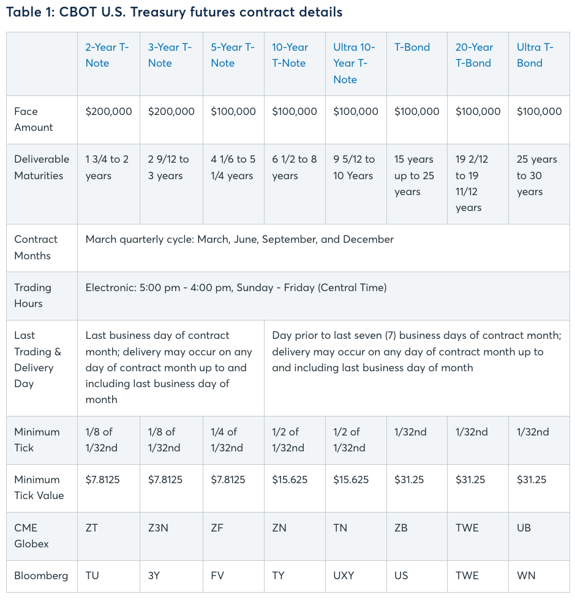

Introduction to US Treasury Futures#
A U.S. Treasury futures contract is a standardized financial derivative that obligates the contract holder to buy or sell U.S. Treasury securities at a predetermined price on a specified future date. These contracts are primarily used for hedging interest rate risk, speculating on interest rate movements, and arbitrage opportunities.
U.S. Treasury futures are predominantly traded on the Chicago Board of Trade (CBOT), which is part of the CME Group. The CME Group offers a range of Treasury futures contracts, including those based on 2-year, 5-year, 10-year, 20-year, and 30-year U.S. Treasury securities. The 20-year futures contracts were launched by the CME Group in 2022 to provide a precise instrument for hedging 20-year bond exposure.
U.S. Treasury futures represent the most liquid centralized market for U.S. Treasuries, trading on average $645 billion in notional value per day in 2023. This high level of liquidity ensures tight bid/ask spreads and deep market depth, making it easier for traders to enter and exit positions.
Basics of Treasury Futures#
Uses of U.S. Treasury Futures#
Hedging: Investors and institutions use Treasury futures to protect against adverse movements in interest rates. For example, a portfolio manager might use these contracts to lock in current interest rates while waiting to purchase actual Treasury securities.
Speculation: Traders can speculate on the direction of interest rates by taking long or short positions in Treasury futures. A long position profits from falling interest rates (rising bond prices), while a short position benefits from rising interest rates (falling bond prices).
Arbitrage: Arbitrageurs exploit price discrepancies between Treasury futures and the underlying cash market to make risk-free profits.
How They Work#
U.S. Treasury futures contracts involve the following key components:
Contract Unit: The face value at maturity is typically \\(100,000 for most Treasury futures contracts, except for shorter maturities like 2-year and 3-year notes, which have a face value of \\\)200,000.
Price Quotation: Prices are quoted in points and fractions of points, with the minimum tick size varying by contract maturity. For instance, the 30-year Treasury bond futures have a minimum tick size of 1/32nd of a point.
Margin Requirements: Traders must maintain an initial margin and a maintenance margin in their brokerage accounts. If the value of the futures position falls significantly, a margin call may be issued, requiring additional funds to be deposited.
Last Trading Day: The business day preceding the 15th calendar day of the contract month.
Delivery Process: Although most futures contracts are closed out before expiration, those held to maturity require the seller to deliver the underlying Treasury securities. The seller can choose the “cheapest to deliver” (CTD) bond that meets the contract specifications.
Contract Months: U.S. Treasury futures are listed on a quarterly cycle, with contracts expiring in March, June, September, and December. Typically, three contract months are listed at a time, but most trading activity is concentrated in the two nearest contract months.
Active Futures Contracts: While you can trade contracts for the nearest months, such as March 2024 or June 2024 (assuming now is Jan 2024), contracts further out, like March 2026 or March 2027, are not typically listed until closer to those dates. The listing of contracts is staggered to ensure liquidity and manageability in the market.
These components make U.S. Treasury futures a versatile and essential tool for managing interest rate risk, speculating on interest rate movements, and engaging in arbitrage opportunities.
See here for more detail: https://www.cmegroup.com/trading/interest-rates/basics-of-us-treasury-futures.html
Contract Specifications#

Mechanics of Trading US Treasury Futures#
Entering into a US Treasury futures trade involves several steps:
Opening an Account: Traders must open a futures trading account with a brokerage firm that provides access to the CME Group.
Placing an Order: Orders can be placed via electronic trading platforms or through brokers. Types of orders include market orders, limit orders, and stop orders.
Margin Requirements: Traders must post an initial margin, a security deposit, to enter a trade. Maintenance margin requirements must also be met to keep the position open. Note: Entering into a Futures Trade is costless. The only cost is the margin requirement which is a security deposit to enter a trade. The margin requirement is a percentage of the contract value. The margin requirement is set by the exchange and can be changed at any time. The margin requirement is set to ensure that the trader has enough funds to cover potential losses.
Daily Settlement: Futures positions are marked to market daily, and gains or losses are settled in cash each day.
Example: Trading US Treasury Futures#
Suppose an investor believes that interest rates will fall, causing the price of Treasury notes to rise. The investor buys a December 10-year Treasury note futures contract at a quoted price of 132-16 (132 and 16/32).
Cost of Entering the Trade: Entering into a futures trade itself is costless except for the margin requirements. There is no upfront cost to buy or sell a futures contract beyond the initial margin deposit, which serves as a security against potential losses.
Margin Requirement: Assume the initial margin requirement is \$2,000. The investor must deposit this amount into their trading account.
Profit or Loss Mechanism:
If the price of the futures contract rises to 133-00, the investor realizes a profit. Each tick (1/32 of a point) represents \\(31.25. The price rise from 132-16 to 133-00 is 16 ticks (0.5 points), translating to a profit of 16 x \)31.25 = \$500.
Conversely, if the price falls to 132-00, the investor incurs a loss of 16 ticks, or \$500.
This daily mark-to-market mechanism ensures that any profit or loss is realized and settled in cash at the end of each trading day.
Delivery and the Conversion Factor#
Delivery is a critical aspect of Treasury futures, providing the link between the futures market and the physical bond market. Contracts are settled by the delivery of an eligible US Treasury security from the seller to the buyer. The following steps outline the delivery process:
Notice of Intention to Deliver: The seller notifies the exchange of their intention to deliver a specific Treasury security.
Selection of Deliverable Bonds: The seller chooses from a list of eligible Treasury securities with varying maturities and coupon rates.
Conversion Factor: Each eligible Treasury bond has a conversion factor, a multiplier used to adjust the bond’s price to a common basis for delivery. The conversion factor accounts for differences in coupon rates and time to maturity.
Physical Delivery vs. Cash Settlement#
US Treasury futures typically involve physical delivery, where the actual bond is transferred from the seller to the buyer. This contrasts with cash settlement, where the contract is settled by exchanging the cash difference between the contract price and the market price at expiration. “Micro Treasury Futures” are cash settled, whereas traditional Treasury Futures are physically delivered. See here: https://www.cmegroup.com/markets/interest-rates/micro-treasury-futures.html
Conversion Factor#
A conversion factor is used in the context of U.S. Treasury futures contracts to standardize the value of different Treasury securities that can be delivered into a futures contract. It adjusts for differences in coupon rates and maturities among the deliverable bonds to ensure a fair comparison.
The conversion factor for any Treasury note or bond is the price at which it would yield 6% annually, rounded to four decimal places. This factor is calculated using a specific formula that considers the bond’s coupon rate and time to maturity. The conversion factor is calculated using the following formula:
Where:
\(n\) is the number of years to maturity.
The coupon is the bond’s annual coupon rate.
Numerical Example
Let’s calculate the conversion factor for a 4.5% coupon bond maturing on November 15, 2033, for the December 2023 futures contract. Assume the first day of the delivery month is December 1, 2023, and the remaining term to maturity is 9 years.
Determine the number of years to maturity:
\(n = 9\) years.
Coupon rate:
\(\text{Coupon} = 4.5\% = 0.045 \).
Apply the formula:
Breaking it down:
Calculate the discount factor: $\( (1 + \frac{0.06}{2})^{2 \times 9} = (1.03)^{18} \approx 1.8061 \)$
Calculate the first part of the formula: $\( \frac{1}{1.8061} \approx 0.5537 \)$
Calculate the second part of the formula: $\( \frac{0.045}{2} = 0.0225 \)$
Calculate the third part of the formula: $\( \left(1 - \frac{1}{1.8061}\right) \times \frac{0.06}{2} = (1 - 0.5537) \times 0.03 \approx 0.0134 \)$
Combine the parts: $\( \text{Conversion Factor} = 0.5537 \times (0.0225 + 0.0134) \approx 0.5537 \times 0.0359 \approx 0.0199 \)$
Thus, the conversion factor for this bond is approximately 0.0199.
Practical Implications
Higher Coupon Bonds: If the bond’s coupon rate is higher than 6%, the conversion factor will be greater than 1, reflecting its higher relative value.
Lower Coupon Bonds: If the bond’s coupon rate is lower than 6%, the conversion factor will be less than 1, indicating a lower relative value.
Citations:
Implied Repo Rate#
The implied repo rate is a key concept in the Treasury futures market that represents the theoretical interest rate earned by purchasing a bond in the spot market and simultaneously selling a futures contract on that bond. It’s essentially the annualized return an investor could earn from buying a bond and delivering it into a futures contract at expiration. It’s called an “implied” repo rate because the act of buying the bond and selling the futures contract replicates lending money into a repurchase agreement (repo) transaction.
The implied repo rate is useful for several reasons:
Identifying arbitrage opportunities: By comparing the implied repo rate to actual repo rates in the cash market, traders can spot potential arbitrage opportunities.
Determining the cheapest-to-deliver (CTD) bond: The bond with the highest implied repo rate is typically the CTD bond for a futures contract.
Assessing relative value: It helps investors compare the value of different bonds that are deliverable into a futures contract.
Gauging market expectations: Changes in implied repo rates can reflect shifts in market sentiment about future interest rates and bond prices.
To compute the implied repo rate, we use the following formula:
Where:
Futures Price is the price of the Treasury futures contract
Conversion Factor is the bond-specific factor used to standardize deliverable bonds
Cash Price of Bond is the current market price of the bond
Days to Delivery is the number of days until the futures contract expires
This formula annualizes the return over the period from the current date to the delivery date of the futures contract. The result is expressed as a percentage.
For example, if we have:
Futures Price = 120
Conversion Factor = 0.8
Cash Price of Bond = 95
Days to Delivery = 90
The calculation would be:
This means that an investor could theoretically earn a 5.05% annualized return by buying the bond and delivering it into the futures contract at expiration.
Citations: